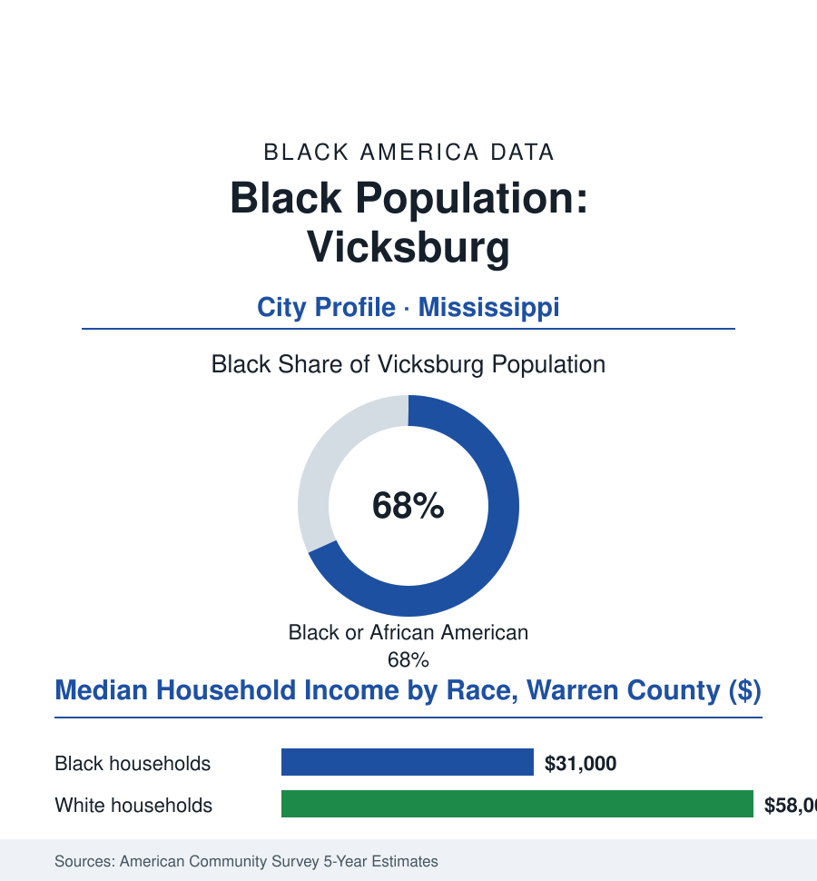

Black Cities
Black Vicksburg: 14,000 People on the Bluff Above the River
Vicksburg's Black majority wrote one of Reconstruction's boldest chapters — a Black sheriff, a Black congressman's launchpad — in a river city the Delta still orbits.

Vicksburg's Black community numbers roughly 14,000 people — about 68% of the river city's 21,000 residents — on the bluff where the Yazoo meets the Mississippi, at the Delta's southern gate. It is a small city with a colossal file: the siege that decided a war was fought over its bluffs, and the Black political nation built in its aftermath was, for a few years, among the most advanced in America. This article reads Vicksburg's numbers.
The Gibraltar and What Rose on It
The bluff made the history: the Confederacy's Gibraltar, starved into surrender on the Fourth of July in the siege whose name the city still bears, its fall freeing the enslaved population of three states into the Union lines at its gates — the contraband camps and the first Black regiments of the Mississippi valley in the military record, Davis Bend downriver (the extraordinary experiment in Black self-governed farming on the Davis family's own plantations, its colonists' landholdings the Delta file's founding might-have-been). What rose on the surrender was Reconstruction at its most realized, and Warren County is its documentary jewel in the state archives: Black voters in the majority, Black officeholders across the county's government — Peter Crosby, the Black sheriff whose violent expulsion in 1874 became the 'Vicksburg troubles' that announced Reconstruction's national retreat — Hiram Revels' and John Roy Lynch's political base in the river counties (the first Black senator's and the great memoirist-congressman's ground), the churches and schools of a freedpeople's city built in a decade. The long Jim Crow that followed pressed the city into the Delta's pattern (the river trade's decline, the population's slow bleed), and the civil-rights era wrote its own local chapters in the boycott and church records. The heritage economy now curates the whole stratigraphy — the national military park's millions of visitors walking a battlefield whose interpretation has slowly, under scholarly and community pressure, admitted the enslaved and the freed into the story the monuments omitted.
The Present Bluff
The institutional shelf carries the history forward in working form: the AME tradition's Campbell College began its life in Vicksburg before moving to Jackson, and the city's churches — some congregations continuous since the contraband-camp revivals — remain its civic skeleton in the congregations data; the Vicksburg-Warren schools carry the Delta's standard battles with a river city's tax base; and the Engineers' station runs one of the federal government's most deliberate STEM pipelines in the rural South (its laboratories hosting the region's Black engineering students in numbers the workforce file would envy elsewhere — the bluff that once aimed artillery now aiming fellowships, an irony the station's own outreach officers have been known to note).
The modern data describe the Delta gateway's shared arithmetic with its own river accents: the distress rows deep (a Black median household income in the low thirty-thousands, poverty around a third of the city in the survey years, the population down from thirty thousand in the living memory of the census — the Delta's regional decline measured at its gate), the industry rows specific (the river itself still working — the port and the towboat economy, the Corps of Engineers' great research station at the city's edge among the largest federal employers in the region, the engineer district's Black professional workforce a local institution of the employment file — the casinos of the riverboat era adding their service payroll, the catfish and timber hinterland behind). The political present is the Reconstruction file's direct descendant in the way that matters here: a Black-majority city governed by its own, its mayor's office and board held across the modern era by Black leadership administering the small Delta city's standard emergencies — water infrastructure, the flood maps of the Yazoo backwater (the Delta file's unfinished pumping argument lapping at Warren County's fields), the school consolidation debates. The city's own framing of its future, in its plans, wagers on the two assets no decline has taken: the river's commerce and the history's gravity — the heritage visitor who comes for the battlefield staying, if the interpretation is honest, for the fuller American story the bluff actually holds.
Reading Vicksburg's Numbers
Fourteen thousand people on the bluff where the nation's fate once turned: Vicksburg is the cities file's proof that the smallest places can hold the largest history — a Black city that was governing itself when the republic was a century younger, still governing itself now. The census counts it quietly, in a small table. The bluff has never been quiet about anything.
More in Black Cities
Black Atlanta: Population, Distribution, and Growth of a Black Metropolis
Metro Atlanta holds more than two million Black residents — roughly one in three, second only to New York. The suburban distribution, migration history, and composition of Black Atlanta in the census data.
Black New York: The Largest Black Population in America
The New York metropolitan area holds about 3.4 million Black residents — more than any metro in the nation — and the city itself about two million. The census profile.
Black Washington: The District and the Metro
The Washington metro holds about 1.6 million Black residents, and the District itself — long a majority-Black city — now records a Black share near 41 percent. The census profile.
Source: U.S. Census Bureau, 2020 Census and American Community Survey 5-year estimates; City of Vicksburg and Warren County; Mississippi Department of Archives and History.